Naturals
Tree to Treat — the original, experienced
For over four decades, Naturals has won on one unshakeable belief: the best ice cream starts with real fruit. Founded in 1984 by Raghunandan Srinivas Kamath, “The Ice Cream Man of India”, the brand grew from a family fruit business into one of India’s most trusted names in ice cream, without ever needing to shout about it.
The challenge
As premium players entered the category with immersive stores and Instagram-ready design, the one thing that made Naturals original stayed invisible. Customers loved what was in the tub, but they never saw why. The brief was to bring that authentic story to life in store, without losing sight of what made the brand iconic.
The product was never the gap
The experience around it was. Naturals had spent 40 years actually using real fruit, not just claiming to, but the retail landscape had moved on.
-
01Company
A decades-old original in a newly crowded category. New premium competitors were making the same authenticity claims, backed by retail experiences Naturals hadn’t built yet.
-
02Customers
Consumers want proof, not promises. Today’s buyer checks ingredients, sourcing and whether a brand’s values hold up. Authenticity has to be provable, not stated.
-
03Category
Premium ice cream is being redesigned around retail. Disruption isn’t happening in the tub anymore, it’s happening in the store.
Tree to Treat
If Naturals’ promise has always been Taste the Original, the store owed customers a way to see it. Tree to Treat is a retail experience built around the same journey that has always defined the brand, from orchard to scoop.
Every touchpoint pulls customers closer to the craft behind the flavour, so visitors aren’t just picking an ice cream: they’re discovering the real fruit, the sourcing and the passion behind it.
-
Celebrate discovery
Turn every visit into an exploration of real fruits, seasonal flavours and the stories behind them.
-
Reveal the craft
Design memorable moments before, during and after every scoop that build emotional connection and encourage repeat visits.
-
Create lasting rituals
Bring the passion and process behind Naturals to life, showcasing the journey from fruit to flavour through immersive storytelling.
The experience should leave every customer thinking: “Now I know why it tastes so fresh!”
A visual language rooted in nature
At the heart of the experience is a bespoke typeface created exclusively for Naturals. Inspired by Tree to Treat, its organic forms translate the brand’s belief in real ingredients and honest craftsmanship into a distinctive typographic voice.
Built on that foundation, a cohesive visual language extends across illustration, environmental graphics, merchandise, staff apparel and in-store communication, so every touchpoint reinforces the story with warmth, authenticity and simplicity.
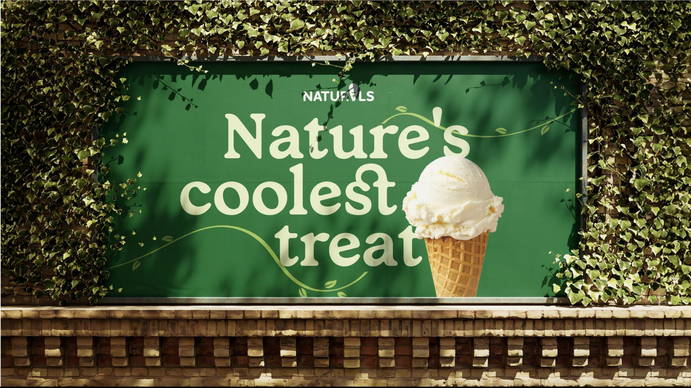
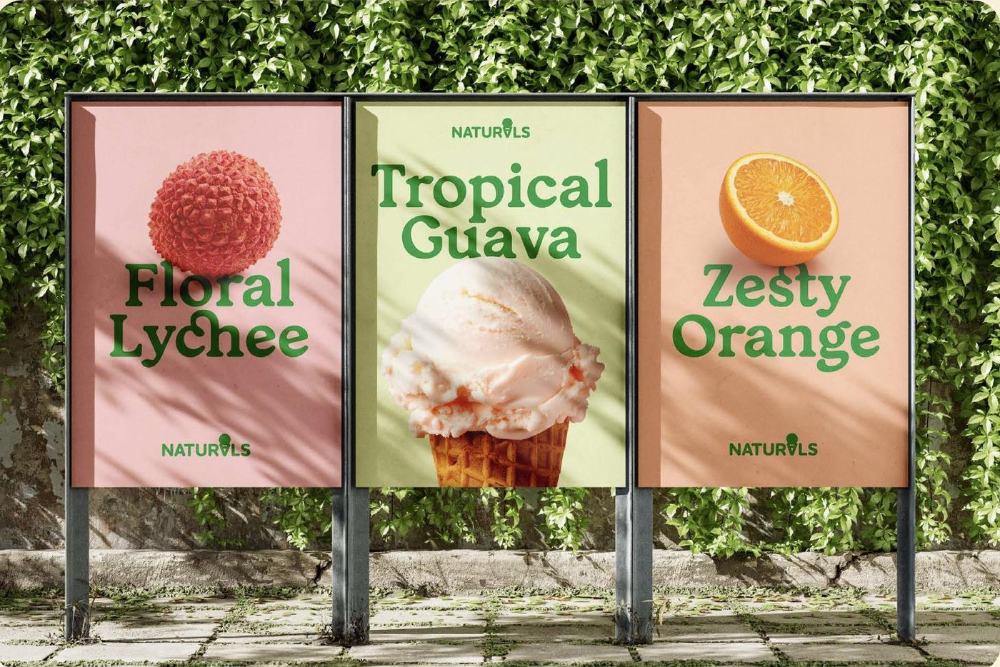
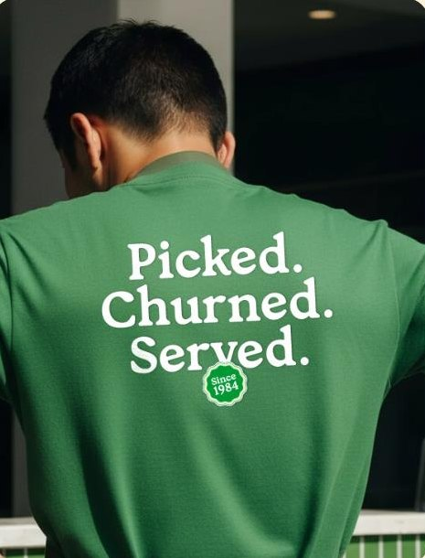
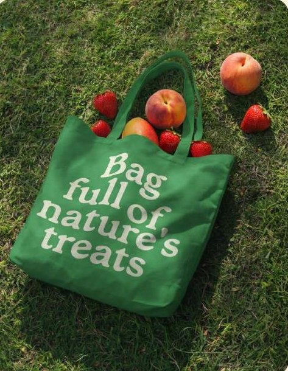
The store
Flowing architectural forms echo the organic movement of nature and the swirl of ice cream, creating a seamless journey through the space. Materials and textures inspired by natural landscapes and creamy finishes make the environment feel warm, tactile and inviting.
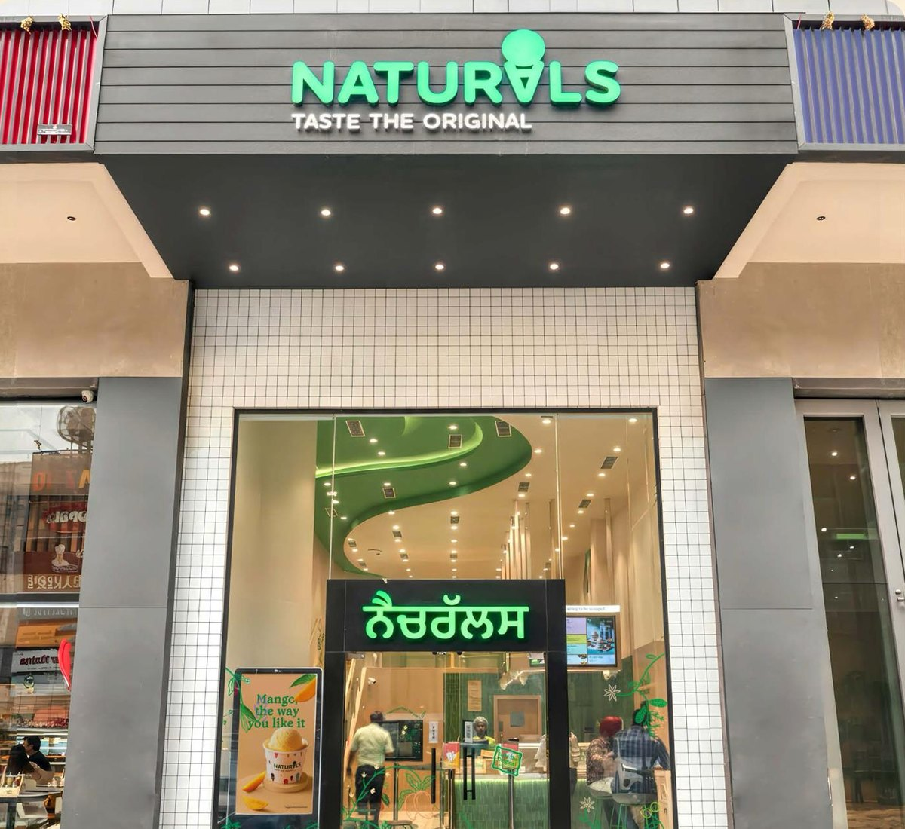
01Arrive
A bright, white-tiled portal frames a glimpse of the green swirl inside, drawing passers-by in from the street.
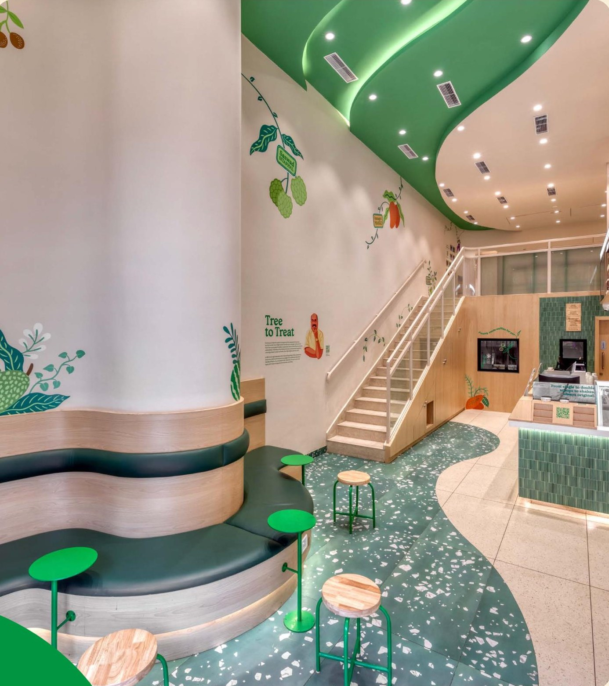
02Linger
Curved banquettes and a terrazzo river flow through the space like the swirl of ice cream, inviting people to stay a while.
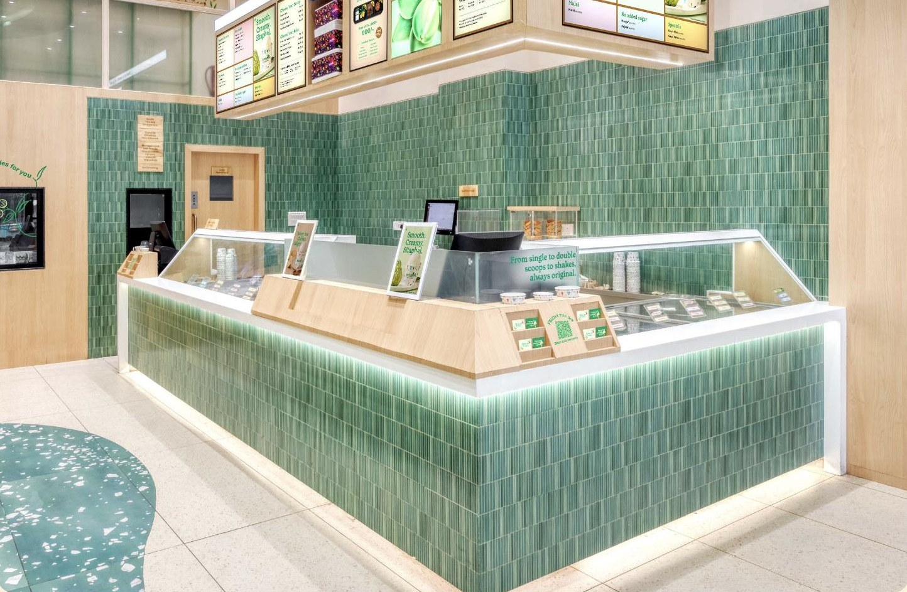
03Taste
A dedicated tasting space lets customers discover the pure, authentic taste of real fruit, bringing them closer to the origin of every flavour through an intuitive, category-based menu.
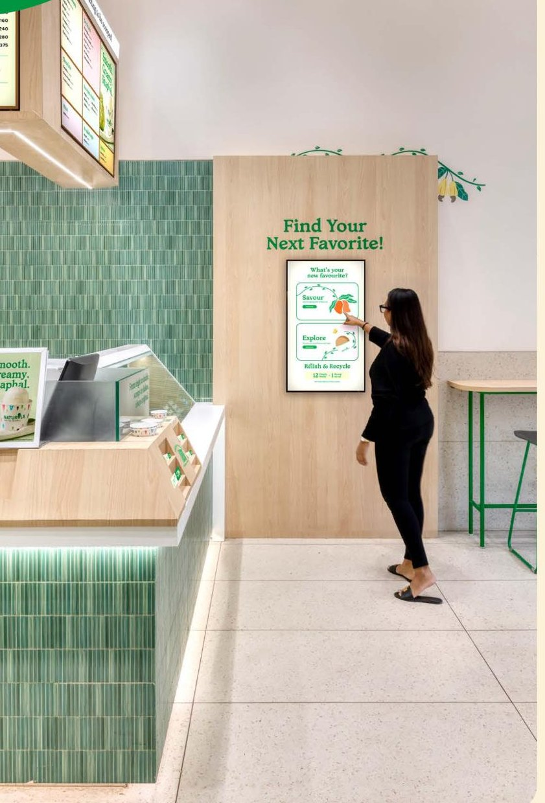
04Discover
An interactive touchpoint helps customers explore the flavour range and find their next favourite.
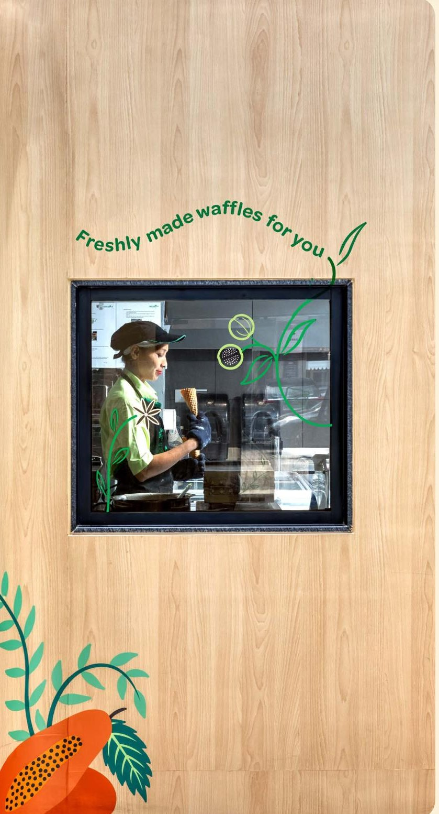
05Watch
A window onto the waffle station puts the craft on show: cones made fresh, in full view.
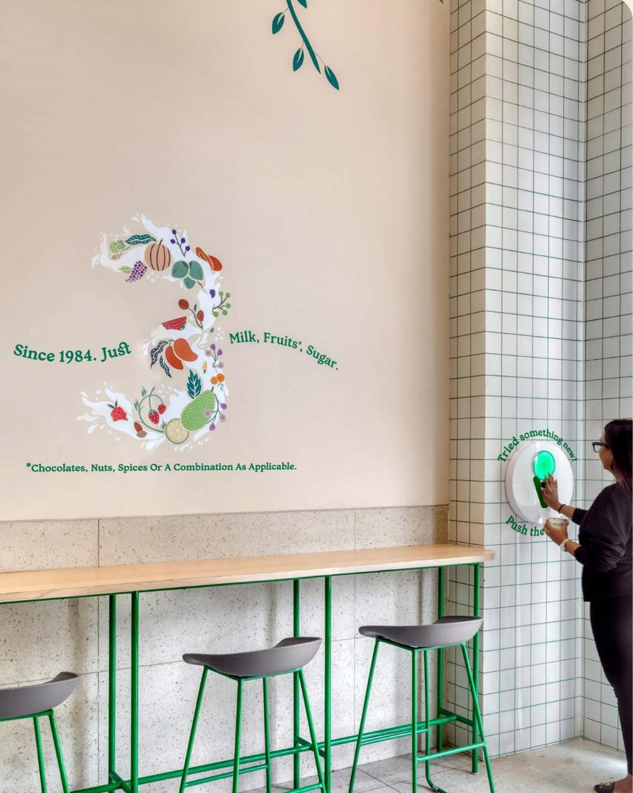
06Celebrate
A celebratory button plays a different bird call with every press, completing the orchard experience.
Stories that shape the experience
As customers move through the store, the original Naturals story comes to life. It begins with the founder’s vision, unfolds from orchard to scoop, and comes full circle through the voices of customers, whose testimonials reflect decades of shared memories.
-
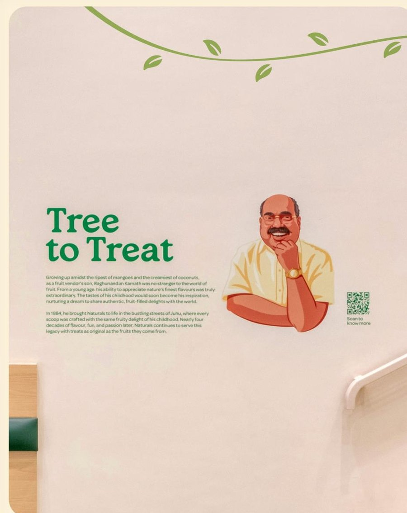
The founder’s vision
Craftsmanship, authenticity and a passion for real fruit: the foundation the brand was built on.
-
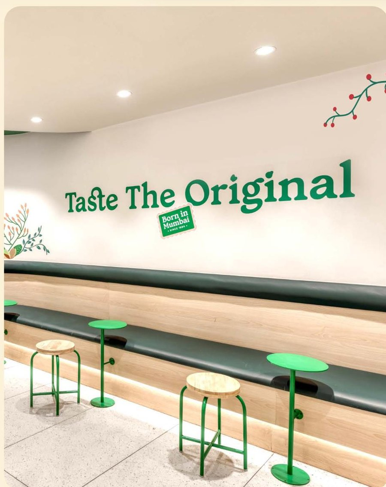
Taste the Original
From orchard to scoop, each touchpoint celebrates the origins and heritage behind every flavour.
-
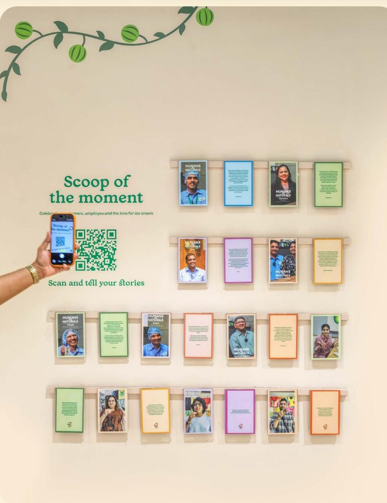
Scoop of the moment
Customers scan and share their own stories, joining a wall of memories that makes every scoop uniquely Naturals.
The impact
“The team demonstrated a deep understanding of our brand and translated it into a retail experience that is consistent, immersive and memorable across every touchpoint. We’re extremely happy with the final outcome.”
— Brand Manager, Naturals Ice Cream
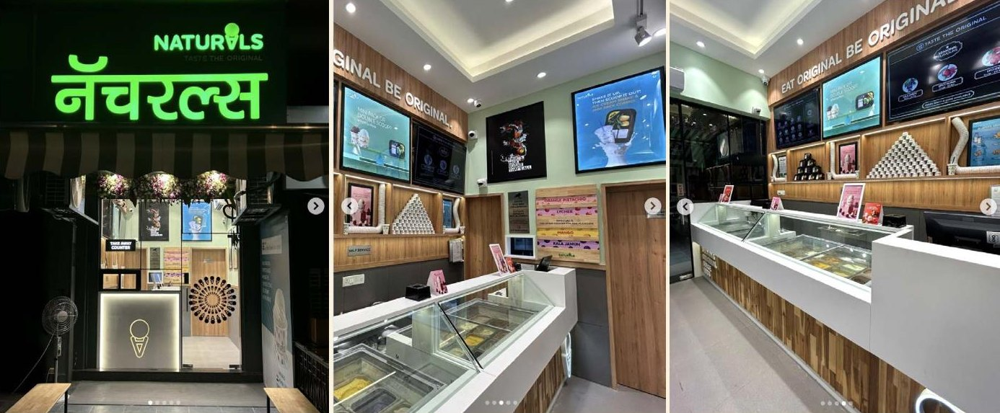
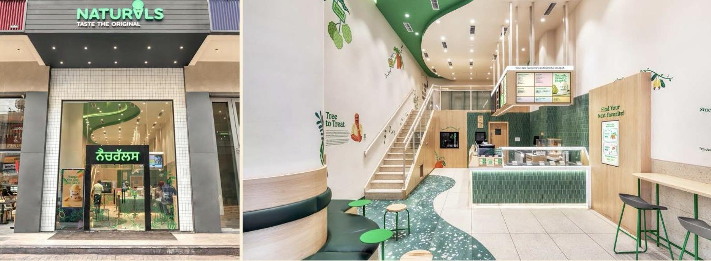
 Snapshots
More projects
Snapshots
More projects